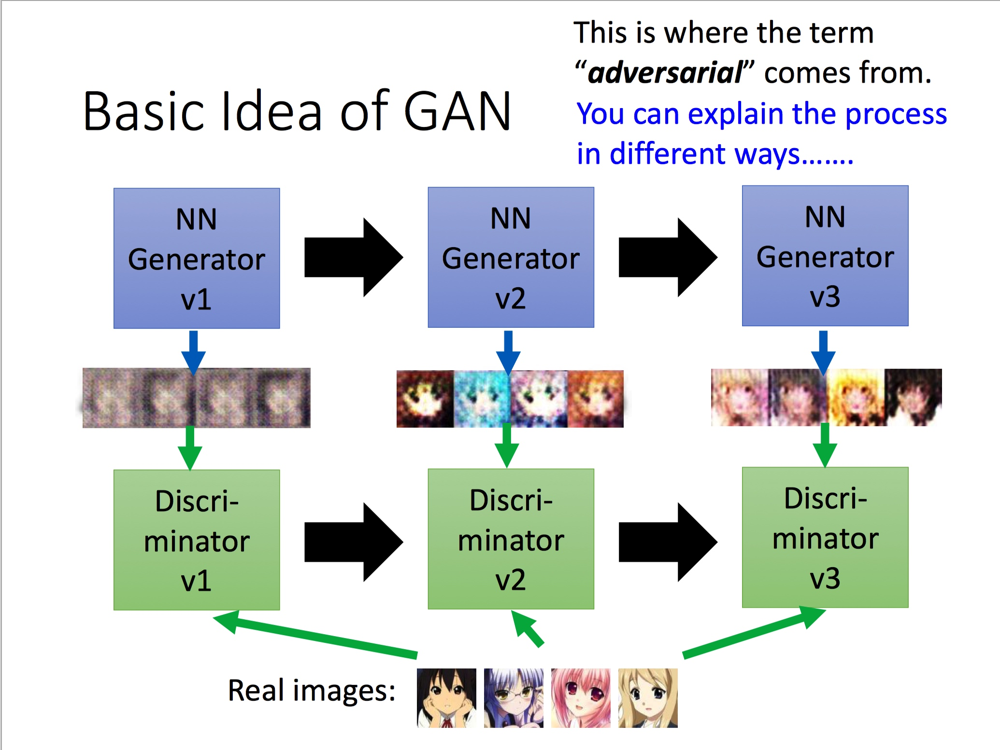
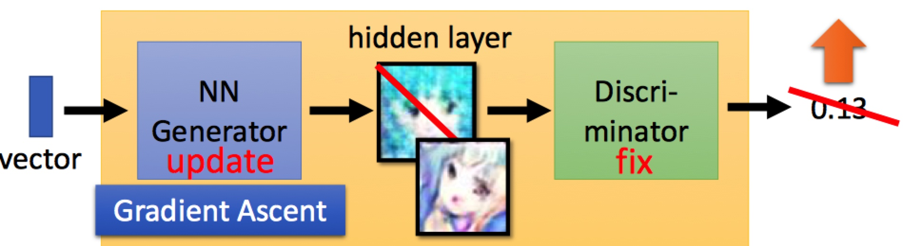

Basic of GAN
Goodfellow微醉时与同学进行一次争论，Goodfellow在酒吧相处了GAN的技术：用一个模型对现实世界进行创造，再用另一个模型去分析结果并对图像的真伪进行识别。
300+ 相关GAN模型
Facebook的AI研究负责人杨立昆（Yann LeCun）将GAN称作“过去20年内在深度学习上最酷的想法”
Generator

Discriminator

The Relation between Generator And Discriminator
将Generator比喻成蝴蝶，Discriminator比喻成捕食者，蝴蝶为了不被捕食者捕杀而一步步进化成枯叶蝶，而捕食者由于食物减少也随之会学会更能判别枯叶蝶的能力：


步骤1： 使生成器G不更新，更新判别器D：

步骤2： 使判别器D不更新，更新生成器G:

伪代码：
In each train iteration:
- Sample m examples {x1, x2, ..., xm} from database
- Sample m noise samples {z1, z2, ..., zm} from a distribution
- Obtaining generated data {G(z1), G(z2), ..., G(zm)}
- Update discriminator parameter to maximize
- Loss_{\theta_{d}} = 1/m * (\sum_{1}^{m} log(D(xi)) + \sum_{1}^{m} log(1-D(G(zi))))
- \theta_d = \theta_d + learning_rate * \Delta(Loss_{\theta_{d}})
- Sample m noise samples {z1, z2, ..., zm} from a distribution
- Update generator parameter to maximize
- Loss_{\theta_{g}} = 1/m * \sum_{1}^{m} log(D(G(zi)))
- \theta_g = \theta_g - learning_rate * \Delta(Loss_{\theta_{g}})
GAN as structured learning
首先我们了解下什么叫做stuctured learning, 机器学习本质上是学习数据集到目标的映射函数 F:X->Y, 对比下机器学习下其他的场景，如回归、分类：
Regression: 输出为连续变量
Classification: 输出为类别（one-hot vector）
Structured Learning: 输出为序列、矩阵（图像）、树等等
Structured Learning的输出是彼此有前后依赖关系的， 比如一个好的系统输出一张生成的图像，图像有蓝天，天空中通常有鸟，但是不会有人（除非是超人），当我们把图像中每一个像素点看做一个components，我们知道这些components之间会有若干联系。
Structured Learning在实际的场景中很有用，比如Machine Translation、Speech Recognition、Chat-bot、Image Transform、Image to Text
Why Structured Learning Challenging
Structured Learning 主要有这几个方面的挑战：
- One-shot/Zero-shot Learning: 在分类任务中，每一个类别有若干个examples，而在Structured Learning，假如我们把components的某一种组合即生成的结果看做一个类别，你会发现类别特别大，不可能有如此多的数据来覆盖，Structured Learning，生成的图像可能在训练数据集中完全没有出现。因此，Structured Learning需要机器更加"智能"，需要学会创造，才能完成相应场景的任务；
- Machine has to learn to do planning： 前面有提到生成图像有蓝天、天空中有鸟，这些components之间有依赖关系，所有的components才能合成一张有意义的图像，Structured Learning必须要有这样的能力，才能完成相应场景的任务；
GAN: A Solution from Structured Learning
传统的在Structure Learning上相关的工作，主要集中在两部分：
- Bottom Up: 要产生一个完整的对象，如图像，需要从component一个一个分别产生，这种方法会失去大局观；
- Top Down: 从整体考虑，生成多个对象，然后找到最好的对象；
而GAN中，Generator就属于Bottom Up的方法，Discriminator属于Top Down的方法，接下来两节，我会详细解释如何理解Generator为Bottom Up，Discriminator为Top Down的方法；
Generator As Bottom Up
假设我们想通过一个向量来生成一张图片，我们一般会如何做呢 ？
很容易，我们一般第一印象会想到Auto-encoder的技术

拿到图片，我们通过一个nn来encoding为一段vector， 然后过NN来decode这段vector，设置loss函数保证decode出来的图像与原始图像尽可能类似，这样我们把decode的部分拿出来，不就是一个Generator了吗 ？
那么Auto-encoder会有什么样的问题呢?
比如code a能生成1的图像，code b也能生成1的图像，比较右向，那么0.5a+0.5b呢 我们可能希望它也有相应的方向变化，但是Auto-encoder可能连1这张图像也无法生成；
如何解决？VAE也是我们在学习GAN经常会拿来对比的

NN Encoder在生成时，会生成对应维度下的方差然后经过如图的组合得到c1,c2,c3去decode相应的输出，这样即使encoder的code约束性更少的情况下也可以得到相应的图像。
说道这样，看起来Generator就可以做到很好的Structure Learning的问题，看到这里，可能会问，前面不是说Bottom Up的方法有缺失大局观的问题吗？如何理解呢？
是的，这里我们来聊下缺失大局观的问题（莫名想到酒神）。
在Auto-encoder中，我们来衡量G的准确性时，我们是拿原始图片和生成的图片，彼此像素值的差异，那么就会存在一个问题：图像对像素值差异越小，越能说明是某一类吗？
第一行中，像素差异的部分只有1个pixel，第二行差异部分有6个pixel，但是我们认为第二行的数据更像属于数字2，这里就是大局观的问题，Generator的方法，在衡量生成结果的时候会有很难设定考虑到大局的相似性函数。
当然，如果在无穷数据、无穷的计算资源下下，这类问题不存在，但是实际当中无法规避，通常的经验是使用Generator生成多个components组成的对象，例如图像时，需要更复杂的网络结构。
Can Discriminator generate
那我们能用Discriminator解决Structured Learning的问题吗？前面有提到Discriminator可以被视为Top Down的一种解决方法。
Discriminator相对Generator很容易去建模components之间的关系，比如

这两个数字，用卷积核，处理components之间的依赖关系，那么Discriminator如何来做呢？
原理很简单，我们只需要遍历所有的数据然后找到生成得分值最好的（实际当中怎么解呢？），即可解决Structured Learning的问题，这里先假设我们能够收集"所有数据"这部分不是问题，那么要想得到一个这样的工具，如何去训练呢？
我们需要得到好和不好的图像，比如在绘画场景下，我们需要得到画的好与画的不好的情况，这个其实就存在一个悖论了，如果我们能得到不好的图像，那么得到好的图像是不是也没有问题呢？怎么得到真实的不好的图像呢?这个是很有意思的
各种不同程度negative会直接影响Discriminator的评分，你很难去得到negative的样本。
而GAN为什么能说是一种比较好解决，同样我们从G和D两个方便来说

- 针对Discriminator，我们能够利用G很好地解决负样本的问题，这个是Discriminator缺乏的能力，G可以进化地去产生更好的负样本，去保证Discriminator更精准；
- 针对Generator，尽管还是每一个component每一个component地去生成对象，但是他会学到Discriminator的大局观。